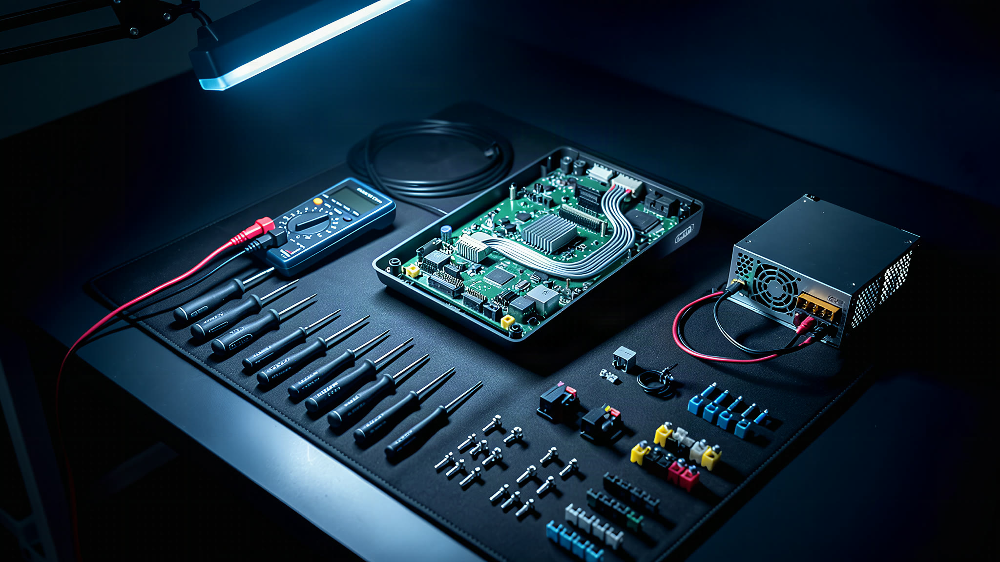

Cada chamado.
Em um só lugar.
| Chamado | Local | Problema | Status | Prazo |
|---|---|---|---|---|
| CH-2481 | Loja 214 · Pinheiros, SP | PDV 03 não liga | Em atendimento | No prazo |
| CH-2479 | Unidade Centro · Campinas | Troca de switch | Técnico designado | Vence hoje |
| CH-2476 | Clínica Vila Mariana · SP | Impressora de etiquetas | Aberto | No prazo |
| CH-2470 | CD Barueri · SP | Coletor sem rede | Aguardando peça | Excedido |
| CH-2468 | Loja 108 · Moema, SP | Instalação de PDV | Finalizado | No prazo |

- Em atendimentoLoja 214 · PinheirosPDV 03 não liga · no prazo
- Técnico designadoUnidade Centro · CampinasTroca de switch · vence hoje
Chega de planilha, de print no grupo e de ligação para saber se o técnico já foi. Cada chamado tem status, prazo e relatório. No mesmo lugar.
A vida de um chamado
Do pedido ao relatório.
Sem perder nada no caminho.
- 01 · Aberto
Sua equipe abre.
Cliente, endereço e janela de atendimento entram de uma vez. O prazo começa a contar na hora.
- 02 · Técnico designado
A NovaSync designa.
Um técnico da região assume o chamado e a visita fica agendada. Você vê quem vai e quando.
- 03 · Em atendimento
O técnico executa.
Pelo celular, ele registra o que encontrou, o que fez e as peças que usou.
- 04 · Atendimento concluído
O relatório sai pronto.
O RAT é gerado em PDF com os dados do chamado já preenchidos e fica anexado a ele.
- 05 · Finalizado
Fica no histórico.
Chamado encerrado, prazo registrado e relatório guardado. Quando precisar, está lá.
- Problema
- PDV 03 não liga
- Endereço
- R. dos Pinheiros, 1000 · São Paulo, SP
- Janela
- Hoje, 13h às 17h
- Prazo
- 2 dias úteis · no prazo
- Visita
- Hoje, 14:00
- Prazo
- No prazo
- DiagnósticoFonte do PDV 03 queimada.
- ServiçoFonte substituída, PDV testado com o gerente da loja.
- Peças1 × fonte 12V 5A
Finalizado dentro do prazo.Chamado, relatório e peças guardados no histórico.
Para o técnico
O chamado
no bolso.
Os chamados do dia com endereço e janela de atendimento. A visita é finalizada ali mesmo, sem papel e sem ligação.
- Em atendimentoLoja 214 · PinheirosPDV 03 não liga · 13h às 17h
- PróximoUnidade Centro · CampinasTroca de switch · amanhã, 9h
- PróximoLoja 108 · MoemaInstalação de PDV · amanhã, 14h
Relatório de atendimento
O RAT
se monta sozinho.
Os dados do chamado entram no relatório automaticamente. O técnico só confere e completa o que fez.
- Cliente e endereço
- Chamado e prazo
- Serviço executado
- Peças utilizadas
Onde tiver TI,
tem chamado.

Os detalhes
que a operação sente.
O que sustenta o dia a dia de quem abre, acompanha e fecha chamados no Horus.
- 01Prazo em dias úteisDois dias úteis a partir da abertura, pulando fins de semana e feriados nacionais.
- 02Status do prazo à vistaNo prazo, vence hoje ou excedido, sinalizado em cada chamado.
- 03Verificação em duas etapasLogin protegido por um código além da senha.
- 04Cadastro de clientesEndereço estruturado uma vez, reaproveitado em cada chamado novo.
- 05Fechamento semanalOs atendimentos da semana reunidos para conferência e aprovação.
- 06Histórico consultávelChamados finalizados com relatório e peças, prontos para quando alguém perguntar.
Vamos esclarecer.
Quem usa o Horus?
Sua equipe abre e acompanha os chamados. Os técnicos parceiros veem os chamados deles e as peças pelo celular. A NovaSync coordena a operação pelo mesmo sistema.
Preciso instalar alguma coisa?
Não. O Horus funciona no navegador, no computador ou no celular, em app.nova-sync.net.
Como funciona o acesso?
Cada pessoa tem o próprio login, com verificação em duas etapas. Técnicos recebem um e-mail de primeiro acesso, e a senha pode ser recuperada por e-mail.
O relatório segue o modelo que o meu fornecedor exige?
Sim. O RAT segue o modelo do fornecedor configurado para a sua empresa, com os dados do chamado já preenchidos.
E os dados da minha operação?
A NovaSync não vende dados. A política de privacidade do Horus detalha quais dados são tratados, com quem são compartilhados e por quanto tempo.
Veja o Horus
com os seus chamados.
Mostramos a plataforma no fluxo da sua operação: abertura, prazo, técnico em campo e relatório.
Quero conhecer o Horus